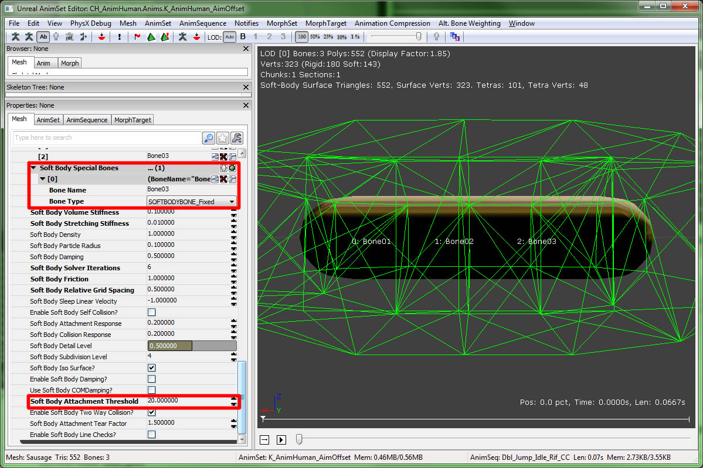

UDN
Search public documentation:
PhysXSoftBodyReference
日本語訳
中国翻译
한국어
Interested in the Unreal Engine?
Visit the Unreal Technology site.
Looking for jobs and company info?
Check out the Epic games site.
Questions about support via UDN?
Contact the UDN Staff
中国翻译
한국어
Interested in the Unreal Engine?
Visit the Unreal Technology site.
Looking for jobs and company info?
Check out the Epic games site.
Questions about support via UDN?
Contact the UDN Staff
PhysX Soft Bodies
Overview
Soft bodies in UE3 are available as an optional extension to skeletal meshes, similar to cloth. Their usage in the editor - i.e., how soft body meshes are imported, edited and placed into levels - also closely mirrors the handling of cloth assets. Before reading on, please make sure you’re familiar with at least the basics of how to use cloth, as this tutorial will primarily highlight the soft body specific details and just quickly skim over the basic concepts shared with cloth. From a global perspective, there are still some notable differences between the two features:
| Cloth | Soft Body |
|---|---|
| In cloth simulation, the simulated mesh is a triangle mesh whose vertices are always a subset of the skeletal mesh’s graphical representation (namely those attached to cloth bones). | For soft bodies, the simulated mesh is volumetric and consists of tetrahedra instead of triangles. The graphical mesh of the skeletal mesh is then “skinned” to the simulated tetrahedra, similar to how the graphical mesh can be skinned to rigid bodies. |
| The resolution of the simulated cloth mesh depends directly on the resolution of the underlying graphical mesh. | The resolution of the simulated mesh can be controlled independently of the resolution of the graphical mesh (by choosing proper soft body tetra mesh generation parameters when modifying the skeletal mesh within the AnimSet Editor). |
| The deformation of cloth has two major behavioral parameters, namely the amount of resistance against motion that: - Stretches the cloth. - Bends the cloth. | The deformation behavior of soft bodies has also has two 'stiffness' parameters against motion that: - Stretches the soft body. - Changes the volume of the soft body. |
- Internal tearing of the simulation mesh is not supported.
- "Auto Attachment", i.e. automatic attachment of the soft body to colliding physics objects is not supported (attachment via "special bones" is though).
- Blending of the results from the soft body simulation with regular skinning is not supported (i.e., there’s no "SoftBodyBlendWeight").
Create the skeletal mesh asset in a 3D content creation package
This first step is identical to the creation of cloths. All that is needed as an input for the Unreal Editor is a skeletal mesh that has one or several “soft body bones” assigned to its vertices. When creating a mesh asset inside a 3D editing tool like Max/Maya, make sure to create at least one bone where the vertices of the mesh that should be affected by the soft body simulation are attached to (with a weight bigger than zero). When done with the editing, export the skeletal mesh to a file to be imported into the Unreal Editor. (See the cloth documentation in MasteringUnrealPhysics, section 15.8, for more details.)
Import the skeletal mesh into UE3 and set the soft body properties
Import the skeletal mesh created with your 3D editing tool inside the Content Browser. Clicking on the thumbnail will open up the AnimSet Editor where the skeletal mesh will be displayed. Below is an example view of a skeletal mesh (SoftBodySausage) that has 3 bones attached (visualized via View -> Show Bone Names). The properties of the soft body can now be manipulated by expanding the SoftBody section found under the Mesh tab to the left of the preview window: The most important properties of the skeletal mesh are shown above:
- bForceCPUSkinning - This has to be checked in order for the soft body vertices to be actually simulated.
- SoftBodyBones - As with the "ClothBones" array in the case of cloths, the bone names that are entered into this array will be used to determine which part of the skeletal mesh will be simulated as a soft body. Here, we’ve entered the names of all 3 bones, so the entire mesh will be used.
- SoftBodyVolume/Stretching Stiffness
- Setting both to the maximal value 1.0 will result in a very stiff soft body that will try to keep the original shape as close as possible.
- Keeping volume stiffness at 1.0 and using a very low value for the stretching stiffness (e.g. 0.0001, zero is not allowed) will give a "liquid blob" behavior, i.e., the soft body will lose its original shape while still attempting to keep the total volume the same.
- Setting both values very low will make the soft body lose its original shape almost entirely.
- SoftBodyParticleRadius - This is the equivalent to the cloth’s "thickness". It’s the minimum collision distance that the soft body will keep from other physics objects. Raising this can help prevent the soft body tunnel through objects in some cases.
- SoftBodyDetailLevel, SoftBodySubdivisionLevel, bSoftBodyIsoSurface - These control the resolution of the generated tetra mesh. See below for details.
Tetra mesh Preview
Besides previewing the tetra mesh, you can also preview the simulation behavior by clicking on the "Toggle Soft Body Preview Simulation" icon. The tetra mesh generation algorithm has a few parameters that can be tuned to control the resolution/quality of the simulation mesh:- SoftBodyDetailLevel / SoftBodySubdivisionLevel - These control the resolution of the soft body mesh. Lowering them will generally result in a simulation mesh that has fewer tetrahedra and vertices and is thus less expensive to simulate.
- bSoftBodyIsoSurface - If this is enabled, the tetra generator will first compute an "iso surface" around the graphical mesh and use this as an input, instead of directly using the raw mesh data. This can be useful if the original graphics mesh has many degenerated triangles, which can cause the generator to output degenerate simulation meshes as well, leading to simulation artifacts.
Attachments
Soft bodies can be attached to a skeletal mesh via SoftBodySpecialBones in the same manner than cloth can via "ClothSpecialBones" (see PhysXClothReference).  As a short summary, the following steps are needed:- A simple physics asset must be created for the skeletal mesh. To create such an asset, right click on the soft body’s skeletal mesh in the Content Browser and select "Create New Physics Asset". Select "Minimum Bone Size" to be -1.
- Now, PhAT should display the skeletal mesh with some auto generated collision boxes for each bone. If this default is not good enough, one can additionally edit the scale/orientation/blocking behavior for the collision geometry. (see PhATUserGuide)
- The attached soft body can now be put into the level. Be sure that the SkeletalMeshActor’s SkeletalMeshComponent has the newly created physics asset referenced in its PhysicsAsset property and has bHasPhysicsAssetInstance checked as well. Additionally, set physics weight to 1.f under SkeletalMeshComponent.
Adding the soft body to the level
To put the soft body into a level, select the skeletal mesh in the Content Browser and right click into the level editor to add a skeletal mesh actor into the scene. Open a property window for the newly created actor: Under SkeletalMeshActor you’ll now find an additional category SoftBody. To run the soft body in the level, enable the simulation check box. To have it collide with level geometry, also select appropriate channels to collide with, e.g. the "default" channel as shown above.
Miscellaneous
- There are two new console commands that can be used when the game is running:
- nxvis softbody_mesh – Visualizes the tetrahedron mesh associated to the soft body.
- nxvis softbody_attachment – Shows the points attached to collision geometry or the world.
- The effect of the "stiffness" parameters on the soft body shape unfortunately depends on the magnitude of the simulation time step. Smaller time steps will make the soft body behave stiffer even though the stiffness values have not changed. When using a varying simulation time step, peaks in the actual elapsed simulation time can cause the soft body to start wobbling "out of nowhere".
As a workaround, one should run soft bodies in a compartment with a fixed time step. (e.g. through the editor via View -> World Properties -> Physics -> PhysicsTimings -> CompartmentTimingSoftBody -> bFixedTimeStep).
Downloads
- Download an example of a soft body.